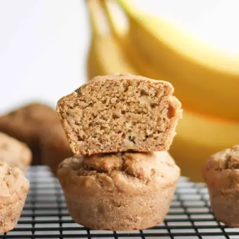

Eggless Banana Muffins

Ingredients
- 1 1/4 cups mashed very ripe banana (320g), (about 3 medium )
- 2/3 cup milk of choice
- 1/4 cup coconut or avocado oil
- 1 teaspoon vanilla extract
- 1 tablespoon ground flaxseeds
- 1 3/4 cups white whole wheat flour (215g) (, spoon and leveled)
- 1 teaspoon baking powder
- 1/2 teaspoon baking soda
- 1 teaspoon cinnamon
- 1/8 teaspoon salt
- Optional: 1/4-1/2 cup chocolate chips or 1/2 cup finely chopped walnuts or pecans
Steps
- Preheat oven to 350°F.
- Mash bananas in a large bowl using the back of a fork or a potato masher. Try to get it as smooth as possible but small lumps are fine. Measure out 1 1/4 cups. To the same bowl, add all the wet ingredients and mix together until well combined.
- Add all the dry ingredients and mix until just combined. Be careful not to over mix. Stir in any optional add-ins.
- Divide batter evenly into a greased, lined or silicone 12-cup muffin pan.
- Bake for 20-25 minutes, or until the inserted toothpick comes out clean. Allow the muffins to cool for 5 minutes before transferring to a wire rack to cool completely.
Recipe by Min Kwon · Kidfriendly Meals, from MJ and Hungryman. Saved here for personal use; the original has the full notes, tips and photos. Open original